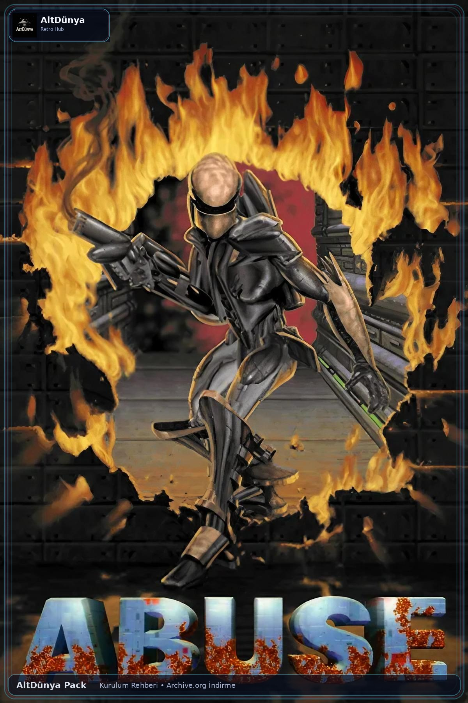

Abuse (1996)
Abuse, karanlık bilim kurgu atmosferi ile hızlı platform aksiyonunu birleştiren ve fareyle nişan alma hissini merkezine koyarak döneminde farklılaşan bir PC klasiği. AltDünya Pack sürümüyle modern sistemlerde tek tıkla çalışacak şekilde hazırlanmıştır.

Oyun Künyesi
AltDünya Yorumu
Abuse bugün hâlâ ilgi çekici çünkü sadece nostaljik bir ad değil; kontrol hissi, tempo duygusu ve yoğun atmosferiyle kendi döneminde gerçekten farklı bir şey denemiş bir oyun. Bu yüzden Kurulum Rehberi serisine hem teknik olarak temiz hem de içerik değeri yüksek bir açılış yapıyor.
Kurulum Rehberi Videosu
Hikâye Özeti
Oyunun merkezinde Nick Vrenna bulunur. Haksız yere hapsedildiği bir cezaevi kompleksinde, personelin mahkûmlar üzerinde etik dışı tıbbi deneyler yürüttüğü ortaya çıkar. Deneylerden biri kontrolden çıkar ve “Abuse” adı verilen madde içerideki insanları canavarlara dönüştürür. Nick ise bu etkiden bağışık görünür. Su kaynaklarının da kirlenme riski doğunca eline silahını alır ve hem hayatta kalmak hem de tesisten kaçmak için mutant sürülerinin içinden ilerler.
Oyunun Önemi
- Platform yapısını fareyle nişan alma mekanikleriyle birleştirerek dönemi için alışılmadık bir kontrol anlayışı sundu.
- Karanlık bilim kurgu tonu, endüstriyel bölüm tasarımı ve baskı hissi veren tempoyla kült statü kazandı.
- Kaynak kodunun ve bazı içeriklerinin daha sonra serbest bırakılması sayesinde uzun yıllar topluluk tarafından yaşatıldı.
- Modern sistemlere uyarlanan sürümleri sayesinde bugün de rahatça oynanabilen retro klasiklerden biri oldu.
Kısa Fact Köşesi
- Oyun küçük bir ekip ve sınırlı bütçeyle geliştirildi, ama oynanış kimliği sayesinde kalıcı oldu.
- İlk planlanan hikâye daha farklıydı; geliştirme sürecinde bugün bilinen cezaevi/mutasyon kurgusuna geçildi.
- Topluluk çalışmaları sayesinde yıllar içinde SDL tabanlı sürümler ve yeni platform portları ortaya çıktı.
- Retro içerik açısından hem oynanış hem de tasarım dili hakkında konuşulabilecek bol malzeme sunuyor.